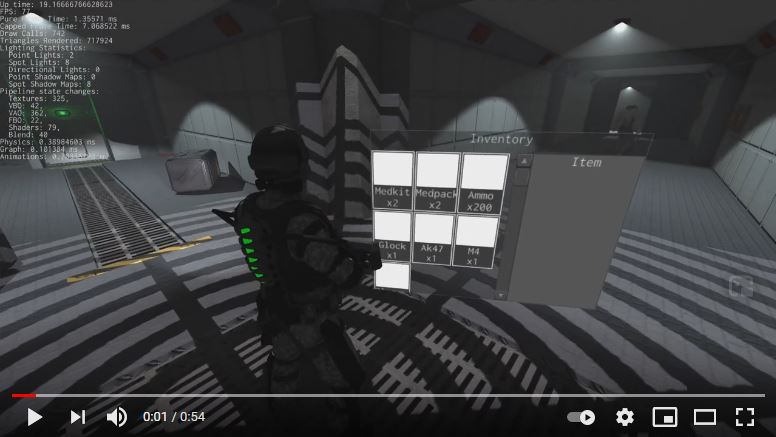
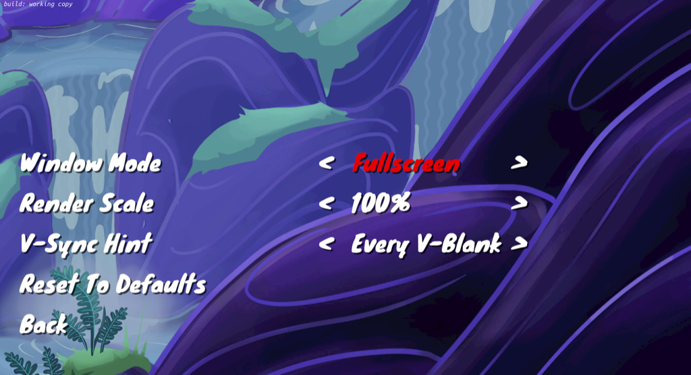

This Month in Rust GameDev #19 - February 2021
Welcome to the 19th issue of the Rust GameDev Workgroup's monthly newsletter. Rust is a systems language pursuing the trifecta: safety, concurrency, and speed. These goals are well-aligned with game development. We hope to build an inviting ecosystem for anyone wishing to use Rust in their development process! Want to get involved? Join the Rust GameDev working group!
You can follow the newsletter creation process by watching the coordination issues. Want something mentioned in the next newsletter? Send us a pull request. Feel free to send PRs about your own projects!
Table of contents:
- Game Updates
- Learning Material Updates
- Engine Updates
- Library & Tooling Updates
- Popular Workgroup Issues in Github
- Requests for Contribution
Rust GameDev Meetup

The second Rust Gamedev Meetup happened in February. It was an opportunity for developers to show off what Rust projects they've been working on in the game ecosystem. Developers showed off game engine demos, in-game playthroughs, tooling, and more. You can watch the recording of the meetup here on Youtube.
The next meetup will take place on the 13th of March at 16:00 GMT on the Rust Gamedev Discord server, and can also be streamed on Twitch. If you would like to show off what you've been working on, fill out this form.
Game Updates
Flesh
 Title screen + gameplay
Title screen + gameplay
Flesh by @im_oab is a 2D-horizontal shmup game with hand-drawn animation and organic/fleshy theme. It is implemented using tetra. This month's updates include:
- Added title screen
- Support gamepad
- Add new enemy types for first level include mid-boss
Fishgame
 Fish game UI.
Fish game UI.
Fishgame (web build) is an online multiplayer game, created in a collaboration between Nakama, an open-source scalable game server, and the Macroquad game engine.
This month fishgame utilized macroquad's new UI system to add a title screen and improve the login screen.
Teki (敵)

Teki is a free and open-source fangame of the Tōhō series using SDL2 and Legion for ECS. It is aimed to be a shoot ’em up game with "lots of bullets" a.k.a danmaku 弾幕 - literally "barrage" or "bullet curtain" in Japanese.
The project is still at a “very” early stage of development (Dec. 2020).
This month's updates include:
- New enemy type: big fairy
- New special card: Stellar Vortex
- Add yin yang orbs
Harvest Hero

Harvest Hero is undergoing a shop system rework. However, new abilities are still being implemented. You can now use Zhebnog's Hourglass to stop time and get weird.
Built on top of Emerald by Bombfuse.
This month's updates include:
- Added "Flame Guard" enchantment
- Added "Zhebnog's Hourglass" ability
- Began work on a new main menu
- Implemented a functional shop system
A/B Street
A/B Street by @dabreegster is a traffic simulation game exploring how small changes to roads affect cyclists, transit users, pedestrians, and drivers, with support for any city with OpenStreetMap coverage.
In February, Bruce implemented lagging green traffic signals, Michael and Yuwen released the new day UI theme. More cycle paths and service roads were imported for all maps, and we added loads of maps, a new per-country picker UI, and dynamic font loading. Try out Taipei in the web browser to see all of this in action!
Paddlers

Paddlers (GitHub, Online Demo) by @jakmeier is an experimental MMORTS with the backend and the web client all written in Rust.
February gave birth to Paddlers release 0.2.1 and a ton of new game mechanics. It features a skill map, quests, and a refreshed take on the tower defense aspect of the game. On top of that, the rendering engine (part of the Paddle framework) has been reworked and now allows for custom shaders. Read all about this month's changes in this article released on the developer's private website.
Stellary 2
 ▶️ Click to watch the full video
▶️ Click to watch the full video
Stellary 2 by @CoffeJunkStudio is a 3D real-time space shooter in which the player has to prevail against enemy space ships.
The latest updates include:
- Players’ space ships
- Prediction of the rocket trajectory
- Energy budget
- Weapon enhancements (trident laser & missile splitting)
Theta Wave
Homing missiles periodically spawn from missile launcher enemies
Theta Wave is a space shooter game by developers @micah_tigley and @carlosupina. It is one of the showcase games for the Amethyst Engine. In the past month, they have been focusing on refactoring the motion system to make the code more approachable to other contributors.
Notable changes:
- Missiles now spawn from missile launcher enemies
- Cursed background slowly fades in over the course of the level
SeniorSKY
Rising sun
SeniorSKY is a flight simulator that uses the Vulkan API, developed by @pmathia0. As an aerospace engineering student, Peter has always been interested in how a flight simulator works under the hood. The development of SeniorSKY started as a hobby project during university studies.
SeniorSKY uses real-world elevation data with 1 arc second precision and can render the whole globe in real dimensions. During the flight, the terrain tiles are loaded dynamically based on real GPS coordinates of airplane, with a decreasing level of detail further from the camera. This is achieved using a combination of a terrain-quad-tree and GPU tessellation.
Notable changes since last month:
- Atmospheric scattering
- Improved fog
- FXAA + HDR tone mapping
- Terrain data preprocessing using compute shaders
- Performance optimizations
Short-term plans:
- replace imgui-rs by egui
- implement sun position based on datetime
- add terrain bump-maps to visualize gravel
Way of Rhea

Way of Rhea is a picturesque puzzle game that lets you correct your mistakes. Change your color, teleport past the colored gates, master the color-powered circuits, and befriend the crabs-but don't let them out!
This month's major updates include:
- New puzzles
- Support for standard video settings (see here)
- The new promotional art shown above
Station Iapetus
 Check gameplay video on YouTube
Station Iapetus by @mrDIMAS is a 3rd person shooter on the space prison Iapetus near the Saturn.
- New inventory (check the video)
- Ability to throw grenades
- Splash damage
- More textures and materials
- Hitboxes for bots and player
- Better bots navigation
- Laser sight improvements
- Weapon display now shows bullet and grenades count
- Lots of other small fixes and improvements
Veloren
 A lush forest to explore
A lush forest to explore
Veloren is an open world, open-source voxel RPG inspired by Dwarf Fortress and Cube World.
In February, lots of work has been done on worldsim, with travelling merchants being worked on. Some experiments have been happening on procedurally generating giant trees. Lots is being done on the combat end, with dual wielding and modular weapons being a big focus. Player trading was also implemented, which allows items to be shared on the server. A large internal shift is being made from diesel to rusqlite.
A rework of attacks was done to allow their effects to be more dynamic. Lots of work has been done on the art team, with new weapon models, new mobs like fish. Some quality of life improvements were added, like humanoids automatically deploying gliders while falling to avoid fall damage. CI changes were made to finally have the Github mirror update periodically without error from LFS storage. In March, Veloren will release 0.9.
February's full weekly devlogs: "This Week In Veloren...": #105, #106, #107, #108.
Project YAWC
Project YAWC is a turn-based strategy game in development by junkmail. February saw the release of Alpha 4, bringing special units and auctions to determine ownership of special units, as well as changes to netcode, balance, and UI.
Those interested in participating in the alpha test should fill out this form. To learn more, you can follow the new @projectyawc Twitter or send an e-mail to projectyawc@gmail.com.
Antorum Online
Challenging Kroob
Antorum Online is a micro-multiplayer online role-playing game by @dooskington. The game server is written in Rust, and the official client is being developed in Unity.
The Armorcrafting, Weaponcrafting, and Salvaging skills were implemented this month! Players can now craft gear in town using materials gathered out in the world. They can also break down old or unwanted gear to recycle it.
Learning Material Updates
Fullscreen Exclusive Is A Lie (...sort of)
 Way of Rhea's video settings
Anthropic Studios has shared an article walking through what they learned from implementing fullscreen exclusivity in their Rust game engine and testing the fullscreen exclusive implementation of existing games on a variety of hardware.
Discussions: /r/rust_gamedev
Rhythm game in Rust using Bevy
Rhythm game demo
Rhythm game in Rust using Bevy is an introductory tutorial for Bevy made by @guimcaballero. It guides through how to use Bevy to develop a Rhythm game, including how to play audio, use GLSL shaders, and make a simple menu screen.
godot-vs-rapier
godot-vs-rapier by @extrawurst is a project that compares Godot's built-in physics against Rapier.
Discussions: r/godot
Engine Updates
macroquad
 Macroquad-UI runtime GUI skins configuration.
Macroquad-UI runtime GUI skins configuration.
macroquad is a cross-platform (Windows/Linux/macOS/Android/iOS/WASM) game framework built on top of miniquad.
This month biggest update: Macroquad got its own fully skinnable and
customizable immediate mode UI system üéâ.
The new system took its origins from a heavily refactored megaui and supports
custom font sizes, fonts and skins for each UI element.
While work is still in progress, all important decisions were made and
implementation PR got merged.
Minor updates:
- Textures support for macroquad materials
- Experimental 2D pan/zoom camera implementation
Tetra
Tetra's demo game
Tetra is a simple 2D game framework, inspired by XNA, Love2D, and Raylib. This month, version 0.6 was released, with some big changes and features:
- A simpler drawing API
- Less global state for mesh drawing
- Multisampled canvases
- Better font rendering
For more details, see the changelog, or 17cupsofcoffee's twitter thread about the release.
rg3d
Check navmesh agent navigation on YouTube
rg3d (Discord, Twitter) is a game engine that aims to be easy to use and provide a large set of out-of-box features. Some of the recent updates:
- Ability to render UI instances in a texture
- FBX name validator
- Fast Approximate Anti-Aliasing (FXAA)
- Integrity checks for resource inheritance
- Nodes now can be tagged
- Animation blending machine now has BlendAnimationsByIndex node
- Multi-directional binding between physics and graph
- SceneDrawingContext improvements: draw_capsule, draw_capsule segment
- Performance statistics for scenes
- ColorGradient improvements
- Path smoothing for navmesh agent
- Lots of other small fixes and improvements.
Dotrix
Demo application demonstrating light rendering
Dotrix (YouTube, Discord) by @lowenware is an ECS based 3D game engine with renderer built around the wgpu-rs.
This month Dotrix 0.3 was released on crates.io with the complete API documentation, major light components update, wireframes, and mouse ray modules.
Library & Tooling Updates
Rafx

Rafx is a multi-backend renderer that optionally integrates with the distill asset pipeline. Rafx is divided into three tiers of functionality:
rafx-api provides a custom GPU API abstraction layer that currently supports
Vulkan and metal. (API in rust psuedocode)
rafx-framework builds on the API layer using ideas found in modern shipping
AAA titles. Rendering is pipelined in a separate thread in three phases, using
jobs to extract data from the main thread, process the data on the render
thread, and write the draw calls to command buffers. [Tatarchuk
2015] A render graph ensures correct synchronization.
[O'Donnell 2017] The framework also provides a material
abstraction and shader pipeline.
rafx-assets adds integration with the distill asset pipeline.
This ensures that when an asset like a mesh is loaded, other related assets like
textures/material/vertex data are loaded. By integrating with Distill, rafx
provides advanced features like streaming live asset updates to remote devices.
More information about rafx:
- Github
- Documentation
- Why Rafx? (includes similarities/differences with other rust and non-rust alternatives)
egui
egui by @emilk is an easy-to-use immediate mode GUI library in pure Rust.
This month versions 0.9 and 0.10 of egui were released with many improvements big and small, including a 2D plot, more text styles, disabling widgets and improved documentation.
You can try out egui in the online demo.
This Month in Mun

Mun is a scripting language for gamedev focused on quick iteration times that is written in Rust.
It's been a long time coming, but the Mun Core Team is closing in on the finish line for Mun v0.3. They are only a couple of pull requests away from locking the build for bug fixes and documentation. The February updates include:
usestatements language support;- Incremental file updates for the language server;
- LLVM 11 support;
- Bug fixes and other improvements.
Graphite
Progress on the GUI
Graphite (GitHub, Discord, Twitter) is an in-progress vector and raster graphics editor built on a nondestructive node-based workflow.
Since February's Rust Gamedev Meetup which announced the Graphite vision has attracted tremendous interest, community advice has shifted the development strategy to focus on a 0.1 MVP release ASAP:
- The past year's in-development custom GUI has been shelved in lieu of an interim web GUI. Graphite intends to natively support Windows, Mac, Linux, and Web. This change unblocks core application development but means Graphite is Web-only until the Rust GUI ecosystem matures. Good progress this month has been made building the web GUI with Vue.
- Graphite 0.1 will now support only vector editing. This defers the large complexity of the graph render engine required for node-based raster editing. It should be less difficult to first focus on building a vector editor that improves upon the UX of Illustrator and Inkscape.
wgpu-rs
wgpu-rs is a WebGPU implementation and API in Rust.
- "wgpu-core"-0.7.1 was published with fixes
- API updated for blending states, cull faces, vertex formats
- Zero-initialization of buffers upon use
- Validation of texture bindings, index formats for strip topologies
- Binding tracker was rewritten with test-ability in mind, bugs fixed
- The player learned to resize the window properly. API traces can now be replayed on Linux even when swapchain recreation events are present
- SPIRV-Cross was made optional, which was useful for Deno in order to work around the linking conflict with "rusty_v8"
gfx-rs
gfx-rs is a portable low-level graphics abstraction layer.
- API got
PhysicalDevicePropertiescontaining limits and properties of physical devices that are not opt-in. - SPIRV-Cross dependency was made optional, while Naga is required.
- Vulkan backend learned to target Vulkan 1.1 and 1.2 internally.
- DX12 understood more limits.
- GL backend fixed WebGL initialization and EGL library discovery.
naga
naga is the shader translation library/tool.
- Versions 0.3.1 and 0.3.2 were published with fixes
- API: function calls turned into statements, image queries , and stores, understanding of push constants.
- Validation: type validation was re-written and improved, new control flow analysis was added to check for uniformity requirements. In addition, this step now collects the image-sampler pairs used by the module.
- Backends: lots of fixes and filling of the gaps
- Infrastructure:
convertexample was removed in favor of the default binary target. The native shaders (produced by the snapshot tests) got validated on CI using platform tools.
Distill
Distill is an asset pipeline for games, reading artist-friendly formats from disk, processing them into your engine-ready formats, and delivering them to your game runtime. Distill handles dependencies between assets, import & build caching, cross-device hot reloading during development, packing assets for a shippable game build, and more.
Distill's design is inspired by Unity's asset system and Frostbite's Scaling the Pipeline. Distill leverages purity in the functional-programming sense to deliver a robust and scalable experience for the asset processing pipeline. With LMDB backing storage of metadata, Distill is able to avoid blocking asset loading while assets are being imported which eliminates the most common frustration with existing commercial offerings. Additionally, Distill is able to provide fully consistent snapshots of asset metadata to readers over capnp-rpc.
basis-universal-rs
basis-universal provides bindings for Binomial LLC's Basis
Universal texture codec.
Basis Universal is a state-of-the-art supercompressed texture codec that was recently open-sourced by Binomial in partnership with Google. It was contributed to the Khronos glTF 3D Transmission Open Standard.
The library has two primary uses:
- Compresses and encode textures "offline" to a custom format
- Transcoding: Unpack the custom format directly to GPU-friendly compressed formats. The final format can be chosen at game runtime to be compatible with available GPU hardware.
Basis universal format can also store mipmapped textures and cubemaps, neither of which is possible with "normal" file formats. Mipmaps can be generated by the library during compression.
Compression is very slow (around 7-10s for a 2k texture) but transcoding is relatively fast (around 5-40ms for a 2k texture depending on quality). Memory savings at runtime are generally >= 75% (depending on the transcode format and quality)
bevy_egui
bevy_egui provides a Egui integration for the Bevy game engine. It supports bevy_webgl2 and implements the full set of Egui features (such as clipboard and opening URLs).
This month versions 0.2 and 0.3 were released, providing an integration with Egui 0.9 and 0.10 respectively.
Try out the online demo.
rkyv
rkyv is a zero-copy deserialization framework for Rust. It's similar to FlatBuffers and Cap'n Proto and can be used for data storage and messaging.
Version 0.4 was released this month and brought some big changes and improvements:
- Major traits have been refactored and renamed to clarify their roles
- Shared pointers (
Rc,Arc,Weak) can now be serialized, deserialized, and validated with correct ownership semantics - Serialization, deserialization, and validation all now support custom contexts
- Greatly improved support for 32- and 64-bit archives by implementing Archive
for
usizeandisize - More comprehensive documentation in the book
This release completes the project's initial feature set, and a request for feedback has been opened to help with future project planning.
wasm_plugin
wasm_plugin is a new low-ish level tool for easily hosting WASM based plugins for modding or scripting.
It consists of two crates:
- wasm_plugin_host which wraps a wasmer instance with methods for calling functions on the guest plugin.
- wasm_plugin_guest which provides an attribute macro to easily export functions to the host.
Popular Workgroup Issues in Github
Requests for Contribution
- Embark's open issues (embark.rs).
- gfx-rs's "contributor-friendly" issues.
- wgpu's "help wanted" issues.
- luminance's "low hanging fruit" issues.
- ggez's "good first issue" issues.
- Veloren's "beginner" issues.
- Amethyst's "good first issue" issues.
- A/B Street's "good first issue" issues.
- Mun's "good first issue" issues.
- SIMple Mechanic's good first issues.
- Bevy's "good first issue" issues.
That's all news for today, thanks for reading!
Want something mentioned in the next newsletter? Send us a pull request.
Also, subscribe to @rust_gamedev on Twitter or /r/rust_gamedev subreddit if you want to receive fresh news!